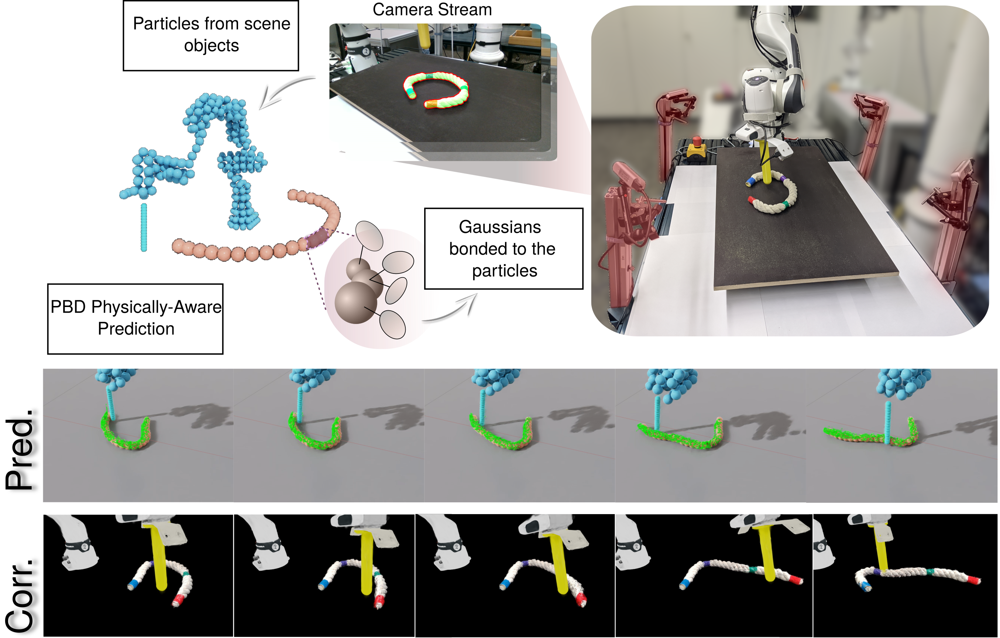

1Technical University of Darmstadt 2German Research Center for AI (DFKI) 3Robotics Institute Germany (RIG) 4Hessian.AI, Germany
Digital twins promise to enhance robotic manipulation by maintaining a consistent link between real-world perception and simulation. However, most existing systems struggle with the lack of a unified model, complex dynamic interactions, and the real-to-sim gap, which limits downstream applications such as model predictive control. Thus, we propose GaussTwin, a real-time digital twin that combines position-based dynamics with discrete Cosserat rod formulations for physically grounded simulation, and Gaussian splatting for efficient rendering and visual correction. By anchoring Gaussians to physical primitives and enforcing coherent SE(3) updates driven by photometric error and segmentation masks, GaussTwin achieves stable prediction–correction while preserving physical fidelity. Through experiments in both simulation and on a Franka Research 3 platform, we show that GaussTwin consistently improves tracking accuracy and robustness compared to shape-matching and rigid-only baselines, while also enabling downstream tasks such as push-based planning. These results highlight GaussTwin as a step toward unified, physically meaningful digital twins that can support closed-loop robotic interaction and learning.

@inproceedings{cai2026gausstwin,
title = {GaussTwin: Unified Simulation and Correction with
Gaussian Splatting for Robotic Digital Twins},
author = {Cai, Yichen and Jansonnie, Paul and de Farias, Cristiana
and Arenz, Oleg and Peters, Jan},
booktitle = {Proceedings of the IEEE International Conference on
Robotics and Automation (ICRA)},
year = {2026},
}